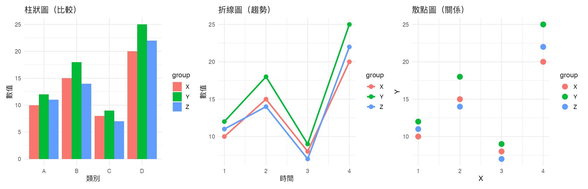

R VIBE CODING
02. 資料類型與圖表選擇
資料類型
資料主要有四種類型：
類別資料
（categorical）：國家、性別、產品類型
連續資料
（continuous）：身高、體重、溫度
時間資料
（temporal）：日期、時間、年份
地理資料
（spatial）：經緯度、行政區
R 實際輸出
下面這張圖展示了四種常見圖表類型：

常見錯誤
1. 用折線圖呈現類別資料
折線圖適合呈現「時間序列」，用在類別資料會誤導讀者以為有順序關係。
2. 用圓餅圖呈現太多類別
圓餅圖最多適合 5 個類別，超過會造成讀者無法判讀。
3. 忽略時間資料的順序
時間資料應該用折線圖或時間軸呈現，而不是用散點圖隨意排列。
練習題
給定一組「產品類別 + 銷售額」的資料，選擇最適合的圖表類型並解釋原因。
找一張你覺得「圖表類型選擇不當」的圖，解釋原因並提出改進建議。
用
geom_col()
和
geom_point()
分別畫同一組資料，比較差異。
R 程式碼下載
下載 chapter02_code.R
下一章：顏色理論與 pixel 復古配色
繼續閱讀 →